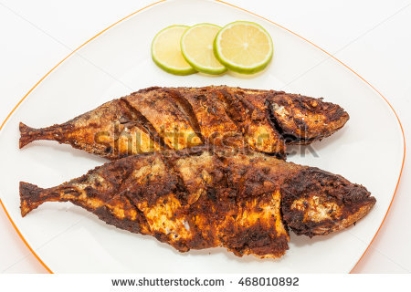

MJM"S Recipies
I am a Pâtissier.I love to cook and I also love to give peoples food.I love to cook and I love the persons who love to cook.I like most to eat desserts and make dessert items.Whenever I make a cake it gives me immense pleasure.If you ever feel sad then just take a chocolate and eat it.You will be happy again.Always eat sweet and be sweet.Then your life will be so easy.
Make a Cake
.png)
If you want to make a cake then you will have to be cold minded.Because it takes a little bit extra time.So,you will have to keep patience.If you cannot do this,Then I suggest you that please do not make cake.But it is really upto you If you want to do this then it is your choice.Again I am saying If you do not have patience then do not do this.
Bangladeshi Cuisine-Fried Fish
Bangladeshis love to eat fish,this is one of the main staples, especially in the cities and especially freshwater fish. The most common fish is carp fish. It is a white fish and It is quite nutritious. Carp fish is often served fried or as a whole fish baked in the oven. Because it is really boney, it is quite a lot of effort to eat it.
Bangladeshi Pitha

Pitha refers to traditional home made cakes in Bangladesh. Many kinds of pithas are made not as a part of the daily menu. But these are served on special occasions such as receiving bridegrooms or brides, entertaining guests, and arranging special get together of family members, relatives or friends. Sometimes children or senior members of the family especially ask for pithas and accordingly, mothers or grandmothers make different type of pithas for them. In some cases, neighbouring families jointly make pithas and use the occasion for chatting and having lunch or dinner together. Most pithas are sweet and a few are chilly. Some are made throughout the year but some are seasonal. Pithas of the winter season are the most delicious. Date juice and molasses from date juice and sugarcane are available in the winter season. These are important ingredients of pithas that are loved by people of almost all regions of Bangladesh. The pitha season in Bangladesh starts in late autumn, when farmers harvest paddy from the field.